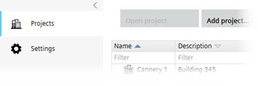

Project Manager
Use Project Manager to create projects and define tool settings, such as the default tool language and default project folders.

Project Manager contains the following tasks.
Task | Description |
|---|---|
Lists all projects and project folders. | |
Overall project settings such as project language and default directories. |

Only use Project Manager for managing your ABT Site projects. Do not use Windows Explorer to archive, clone, or distribute ABT Site projects.